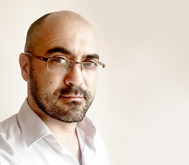
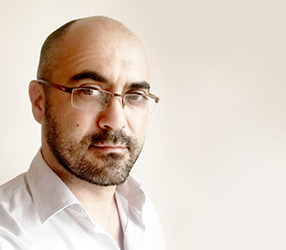

André Carrilho
 

Nasceu em 1974, em Lisboa. É ilustrador, cartunista, animador e caricaturista. Galardoado com dezenas de prémios nacionais e internacionais, já participou em exposições colectivas e individuais em Portugal, Espanha, Brasil, França, República Checa, China e Estados Unidos da América. O seu trabalho está publicado por uma extensa lista de jornais e revistas que inclui The New York Times, The New Yorker, Vanity Fair, New York Magazine, Independent on Sunday, NZZ am Sonntag, Harper’s Magazine, New Statesman e Diário de Notícias. Em 2002, recebeu o Gold Award pela Society for News Design pelo seu portefólio de ilustração, um dos mais prestigiados prémios internacionais de ilustração. Em 2015, um dos seus cartunes sobre a epidemia do ébola tornou-se mundialmente viral e valeu-lhe o Grande Prémio no World Press Cartoon. Nesse mesmo ano, foi convidado a conceber o mural de caricaturas que decorou a famosa festa dos óscares da revista Vanity Fair.